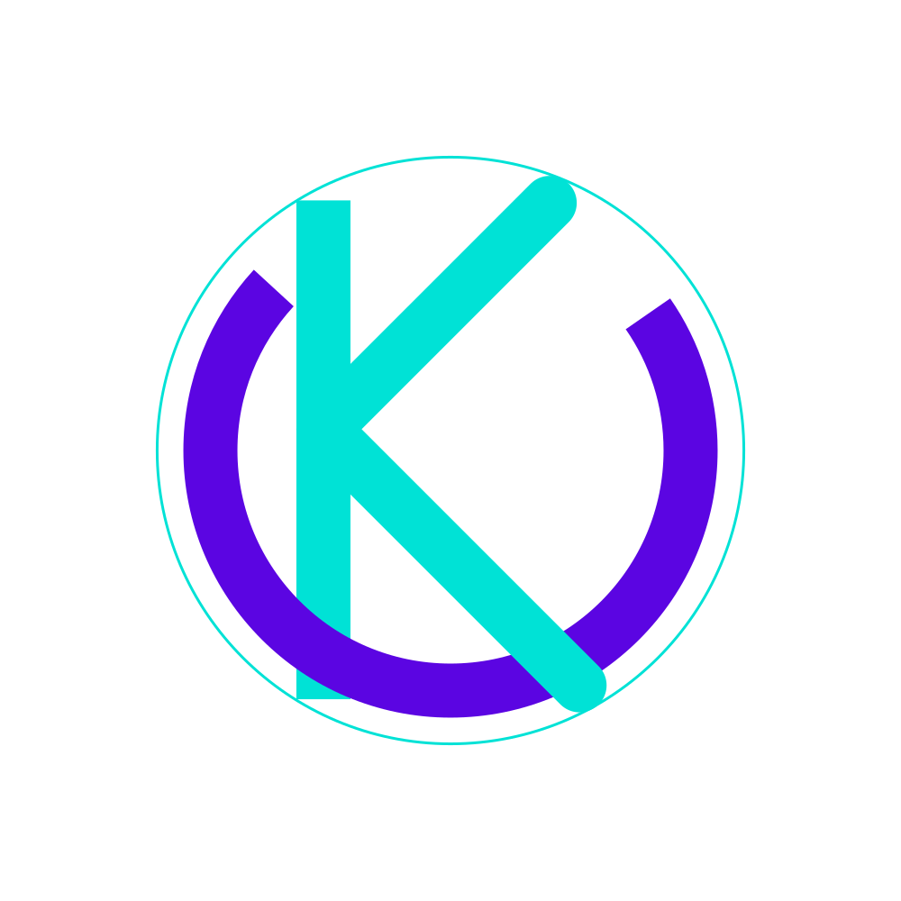

<!-- * * * * * * * * * * * * * * * * * * * * * * * * * * * * * * * -->
<!-- * * * * * * * * * * * The content below * * * * * * * * * * * -->
<!-- * * * * * * * * * * is only a placeholder * * * * * * * * * * -->
<!-- * * * * * * * * * * and can be replaced. * * * * * * * * * * * -->
<!-- * * * * * * * * * * * * * * * * * * * * * * * * * * * * * * * -->
<!-- * * * * * * * * * Delete the template below * * * * * * * * * * -->
<!-- * * * * * * * to get started with your project! * * * * * * * * -->
<!-- * * * * * * * * * * * * * * * * * * * * * * * * * * * * * * * -->

<style>
  .spacer {
    flex: 1;
  }

  .mat-sidenav-content::-webkit-scrollbar {
    width: 10px;
  }


  .mat-sidenav-content::-webkit-scrollbar-track {
    border-radius: 10px;
  }


  .mat-sidenav-container::-webkit-scrollbar-thumb {
    background: grey;
    border-radius: 10px;
  }


  .mat-sidenav-container::-webkit-scrollbar-thumb:hover {
    background: #464e7e;
  }

  .mat-toolbar.mat-primary {
    position: sticky;
    top: 0;
    z-index: 1;
  }

  .mat-sidenav {
    border-radius: 10px;
    display: flex;
    margin-top: 9px;
    color: primary;
    box-shadow: 0 4px 17px #464e7e;
    align-items: end;
    top: 0;
    z-index: -1;
  }

  .active-link {
    background-color: #464e7e;
  }

  .mat-nav-list .mat-list-item:focus {
    /* default bg color */
    background-color: #464e7e;
    /* ovrride bg color to match your item-active*/
    background-color: rgba(0, 0, 0, 0.1);
  }

  .mat-drawer-inner-container {
    overflow: hidden !important;
  }

  @media screen and (max-width: 620px) {
    .mat-sidenav {
      margin-top: 2px;
    }
  }
</style>

<!-- Toolbar -->
<!-- Toolbar -->
<mat-toolbar color="primary" class="header">
  

  <div>Ukon</div>
  <div class="spacer"></div>
  <span class="nav-tool-items">
    <mat-icon (click)="sidenav.toggle()" class="hamburger">menu</mat-icon>
  </span>
</mat-toolbar>
<mat-sidenav-container [hasBackdrop]="true">
  <!-- Sidenav -->

  <mat-sidenav #sidenav [mode]="isBiggerScreen() ? 'over' : 'side'" [(opened)]="opened" [fixedInViewport]="true"
    [fixedTopGap] (click)="sidenav.toggle()">

    <mat-nav-list>
      <span class="spacer"></span>

      <a mat-list-item fxLayoutAlign="space-around center">
        <mat-icon>dashboard</mat-icon> Dashboard
      </a>

      <a mat-list-item fxLayoutAlign="space-around center">
        <mat-icon>person</mat-icon> User Profile
      </a>
      <a mat-list-item routerLink="/new_post" fxLayoutAlign="space-around center">
        <mat-icon>content_paste</mat-icon> New Post
      </a>
      <a mat-list-item routerLink="/post" fxLayoutAlign="space-around center">
        <mat-icon>library_books</mat-icon> POST
      </a>
      <a mat-list-item fxLayoutAlign="space-around center">
        <mat-icon>location_on</mat-icon> Maps
      </a>
      <a mat-list-item routerLink="/singin" fxLayoutAlign="space-around center">
        <mat-icon>how_to_reg</mat-icon> Login
      </a>
    </mat-nav-list>
  </mat-sidenav>
  <!-- Main content -->
  <mat-sidenav-content>


    <router-outlet> </router-outlet>


  </mat-sidenav-content>

</mat-sidenav-container>

<!-- <router-outlet> </router-outlet> -->